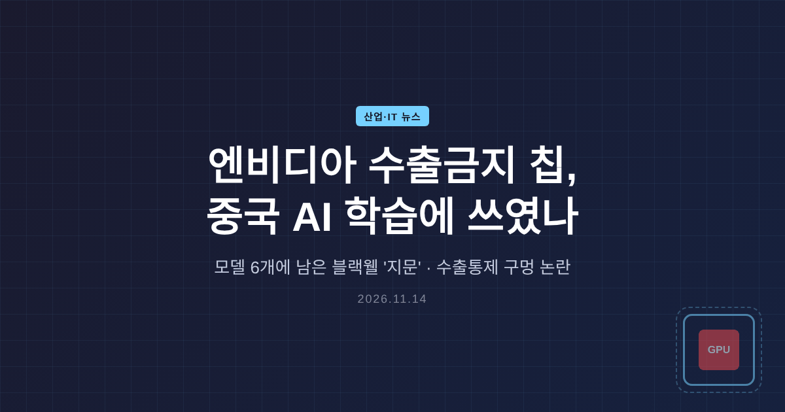
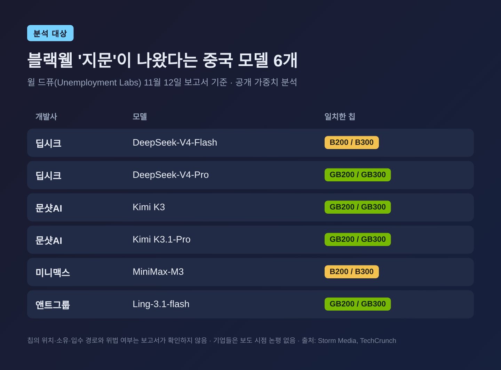
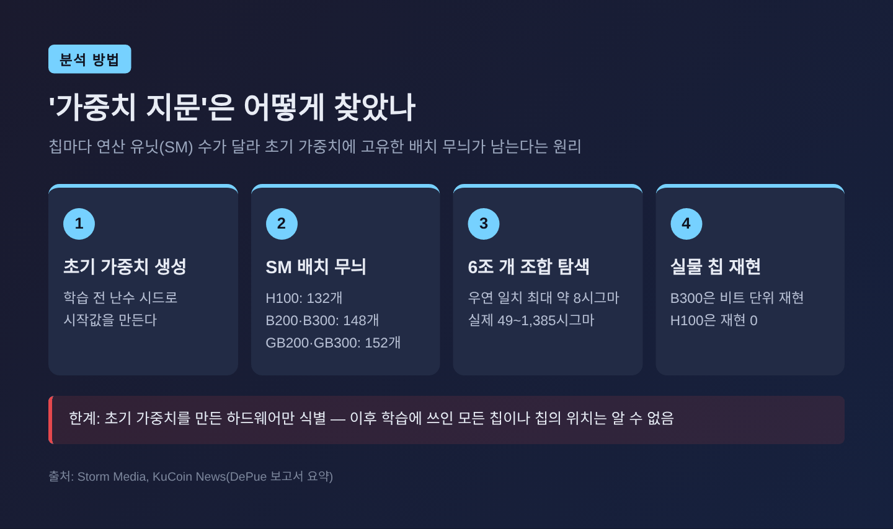
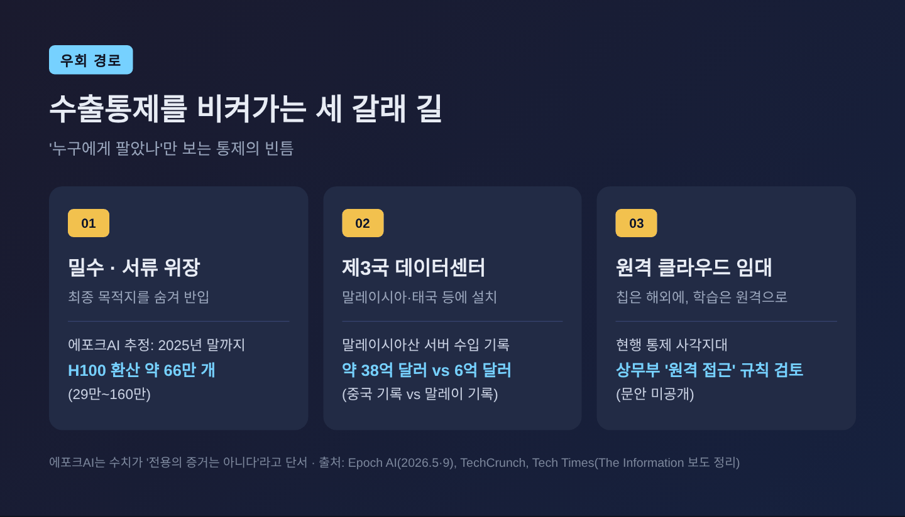
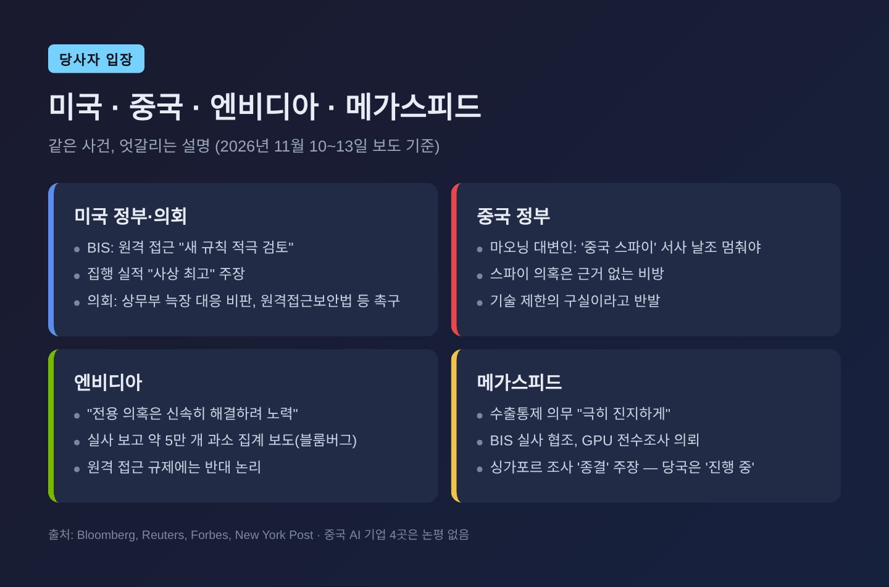
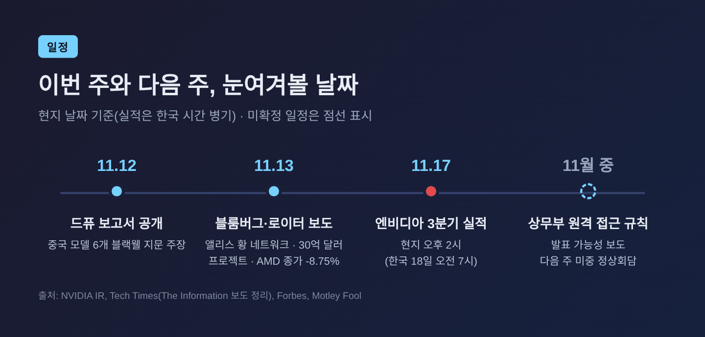

엔비디아 수출금지 칩, 딥시크·키미 학습 흔적 나와…수출통제 구멍 논란

이번 글에서는 수출이 금지된 엔비디아 블랙웰 칩이 중국 대표 AI 모델 학습에 쓰였다는 분석을 정리해 보겠습니다. 무엇이 확인됐고 무엇이 아직 주장인지, 미국 수출통제가 어디서 새고 있는지, 한국 반도체에는 어떤 의미인지 차례로 짚습니다.
세 줄 요약
- 전 오픈AI 연구원 윌 드퓨가 11월 12일 공개한 분석에서, 딥시크·문샷AI·미니맥스·앤트그룹의 공개 모델 6개에 중국 수출이 금지된 엔비디아 블랙웰 칩의 '지문'이 남아 있다고 주장했습니다.
- 다만 보고서 스스로 "칩이 어디 있었는지, 누가 소유했는지는 알 수 없고, 법 위반을 확인한 것도 아니다"라고 선을 그었습니다.
- 같은 주 블룸버그·로이터의 우회 경로 보도가 겹치면서, 미국 상무부는 제3국 클라우드까지 겨냥한 '원격 접근' 규제를 검토하고 있습니다.
■ 무슨 일이 있었나 — 모델 가중치에 남은 칩의 흔적
분석을 내놓은 사람은 전 오픈AI 연구원 윌 드퓨(Will DePue)입니다. 그가 이끄는 비영리 단체 Unemployment Labs 이름으로 11월 12일 보고서를 냈고, 테크크런치가 13일 이를 비중 있게 다뤘습니다.
대상은 4월 이후 공개된 중국 공개 가중치 모델 6개입니다. 딥시크의 V4-Flash와 V4-Pro, 문샷AI의 Kimi K3와 K3.1-Pro, 미니맥스의 M3, 앤트그룹의 Ling-3.1-flash입니다. 이 가운데 4개는 그레이스 블랙웰(GB200·GB300) 시스템, 2개는 B200·B300 칩과 일치한다는 결론이었습니다.

방법은 독특합니다. AI 모델은 학습 전에 난수로 초기 가중치를 만듭니다. 이때 값이 GPU의 연산 유닛(SM)에 나뉘어 배치되는데, 칩마다 유닛 수가 다릅니다. H100은 132개, B200·B300은 148개, GB200·GB300은 152개입니다. 칩과 난수 시드의 조합이 남긴 무늬는 학습을 거친 뒤에도 일부 남는다는 것이 드퓨의 설명입니다.
그는 약 6조 개 조합을 뒤졌습니다. 우연히 나올 수 있는 일치도는 약 8시그마인데, 실제 결과는 49~1,385시그마였다고 합니다. 실물 칩으로 재현도 시도했습니다. B300은 V4-Flash의 초기값을 비트 단위까지 다시 만들어냈고, H100은 단 한 줄도 맞추지 못했습니다.

규모 추정도 내놓았습니다. Kimi K3와 DeepSeek-V4-Pro는 각각 수천 개의 블랙웰 GPU로 학습됐고, 대형 학습 5건을 합치면 5억 달러가 넘는 장비가 들어갔을 것이라는 추산입니다. 어디까지나 연구자 개인의 추정치입니다.
■ 확인된 것과 아직 주장인 것
이 대목은 분명히 나눠 둘 필요가 있습니다.
확인된 사실에 가까운 것은 '방법이 재현 가능하다'는 점입니다. 드퓨는 칩 종류를 공개한 오픈 모델 24개에 같은 방법을 적용했고, 모두 실제 하드웨어와 맞았다고 밝혔습니다. 누구나 공개된 가중치로 검증해 볼 수 있다는 점도 신뢰를 더합니다.
반면 다음은 아직 열려 있습니다. 첫째, 칩의 위치입니다. 보고서는 초기 가중치를 만든 하드웨어를 가리킬 뿐, 그 칩이 중국 본토에 있었는지 말레이시아·태국 데이터센터에 있었는지는 보여주지 못합니다. 둘째, 위법 여부입니다. 보고서는 "어떤 법이 위반됐다는 결론이 아니다"라고 직접 적었습니다. 셋째, 외부 검증입니다. 드퓨는 오픈AI·앤트로픽 선임 연구자들이 독립 검증했다고 X에 썼지만, 검토자 이름은 공개되지 않았습니다.
해당 기업들은 보도 시점까지 입을 열지 않았습니다. 딥시크는 지난 2월 미국 정부 관계자가 "V4가 블랙웰로 학습됐다"고 했을 때도 이를 부인한 바 있다고 대만 매체 풍전매가 전했습니다.
■ 왜 중요한가 — '소유'만 막는 통제의 한계
미국의 대중 반도체 통제는 크게 보면 '누구에게 팔지 않느냐'에 맞춰져 있습니다. 그런데 이번 분석은 '어디서, 누가 빌려 쓰느냐'라는 빈틈을 드러냈습니다.
예전엔 칩을 국경 밖에 묶어두면 통제가 된다고 봤습니다. 지금은 칩이 제3국에 그대로 있어도, 중국 기업이 원격으로 빌려 학습할 수 있다는 점이 핵심 쟁점이 됐습니다.
조지타운대 안보·신기술센터(CSET)의 샘 브레스닉은 "중국 본토 접근만 막고 말레이시아에서 쓰는 것은 허용하는 것은 앞뒤가 맞지 않는다"고 지적했습니다. 현재 미국 기업이 고객의 칩 사용처까지 추적할 의무는 크지 않다는 점도 함께 거론됩니다.
우회 경로는 대체로 세 갈래로 정리됩니다.

규모를 가늠할 숫자도 있습니다. 연구기관 에포크AI는 2025년 말까지 중국에 밀반입된 칩을 H100 환산 약 66만 개(90% 신뢰구간 29만~160만 개)로 추정했습니다. 해외 클라우드 이용분은 뺀 수치입니다. 말레이시아 경로만 따로 보면, 2024년 4월부터 2025년 6월까지 중국이 기록한 말레이시아산 서버 수입액은 약 38억 달러였는데 말레이시아가 기록한 대중 수출액은 약 6억 달러에 그쳤습니다. 에포크AI는 이 차이가 30억 달러 이상의 밀수와 부합한다면서도 "전용의 증거는 아니다"라고 단서를 달았습니다.
■ 같은 주에 쏟아진 보도들 — 앨리스 황 네트워크와 30억 달러 프로젝트
이번 분석이 크게 번진 데는 시점이 한몫했습니다. 젠슨 황 엔비디아 CEO가 이번 주 퇴진했고, 그 배경으로 싱가포르 기업 메가스피드의 전 임원 앨리스 황이 거론되고 있습니다.
블룸버그는 13일 '앨리스 황의 AI 칩 네트워크'를 다뤘습니다. 보도에 따르면 그와 연결된 중국 회사가 중국 반입이 금지된 엔비디아 칩을 조달해 상하이의 AI 시설에 설치했습니다. 싱가포르의 엔비디아 클라우드 파트너가 H800이 든 델 서버 22대를 샀고, 앨리스 황이 세운 상하이 회사의 담보 서류에는 H100 또는 H200이 탑재된 슈퍼마이크로 장비 52대가 올라 있었다고 합니다.
로이터도 같은 날 통제 대상 엔비디아 칩(H100·H200·H800)을 전제로 한 중국 컴퓨팅 프로젝트가 30억 달러를 넘는다고 보도했습니다. 푸젠성 셴유의 62억 위안(약 8억7천만 달러) 규모 센터, 내몽골의 H200 서버 625대 계획 등이 포함됐습니다. 다만 입찰 문서만으로는 실제 납품 여부를 확인할 수 없다는 한계도 함께 적었습니다.
시장도 흔들렸습니다. 13일 미국 증시에서 AMD는 8.75% 내린 534.06달러로 마감했습니다. 장중에는 10% 넘게 빠지기도 했습니다. 주초 최대 30% 올랐던 데 따른 차익 실현과 엔비디아 불확실성이 겹쳤다는 분석입니다. 엔비디아는 2.01% 내린 162.85달러에 장을 마쳤습니다. (주가 언급은 사실 전달용이며 투자 권유가 아닙니다.)
■ 미국·중국·엔비디아, 각자의 입장

미국 정부 안에서도 온도 차가 있습니다. 상무부 산업안보국(BIS)은 원격 접근에 대해 "새 규칙을 적극 검토 중"이라며, 집행 실적은 "사상 최고 수준"이라고 밝혔습니다. 반면 공화당 존 케네디 상원의원 등 여러 의원은 상무부가 메가스피드 건에 늑장 대응했다고 비판합니다. 테크 매체 디인포메이션은 상무부가 싱가포르·말레이시아·태국 등의 클라우드 사업자가 블랙웰급 칩을 받을 때 미국 허가를 받도록 하는 규칙을 마무리하고 있다고 전했습니다. 규칙 문안은 아직 공개되지 않았고, 대상국 목록도 전하는 매체마다 다릅니다.
중국 정부는 강하게 반발합니다. 마오닝 외교부 대변인은 12일 "미국은 이른바 '중국 스파이' 서사를 날조해 기술 제한의 구실로 삼는 일을 멈춰야 한다"고 말했습니다. 스파이 의혹 자체도 근거 없는 비방이라는 입장입니다.
엔비디아는 "'전용' 의혹은 신속히 해결하려 노력한다"는 입장을 내왔습니다. 그러나 블룸버그는 엔비디아가 메가스피드 실사에서 "전량 확인"을 보고했지만 무역 기록과 비교하면 약 5만 개가 덜 집계됐다고 보도했습니다. 엔비디아는 추가 창고에서 찾았다고 해명했지만 수량은 밝히지 않았습니다. 엔비디아는 원격 접근 규제에 대해서도 "막으면 중국이 자체 칩 역량을 키울 뿐"이라는 논리로 반대해 온 것으로 알려졌습니다.
메가스피드는 수출통제 의무를 "극히 진지하게" 여기며 BIS 실사에 협조했다고 밝혔습니다. 싱가포르 경찰 조사를 두고는 메가스피드가 "불이익 없이 종결됐다"고 한 반면, 싱가포르 당국은 지난달 "진행 중"이라고 밝혀 주장이 엇갈립니다.
■ 한국 반도체에는 어떤 의미인가
먼저 기회 요인입니다. 엔비디아 리더십 공백과 규제 리스크가 커지면 빅테크가 공급망을 다변화할 유인이 생깁니다. JP모건은 2027년 HBM 소비량에서 빅테크 자체 칩 비중(48%)이 엔비디아(43%)를 앞설 것으로 봤습니다. 삼성전자는 AMD 차세대 가속기 MI455X용 HBM4 우선 공급사로 지정돼 '엔비디아 플러스 원' 수혜 후보로 꼽힙니다.
부담도 있습니다. SK하이닉스는 엔비디아의 핵심 HBM 공급사여서, 엔비디아 신제품이나 구매 일정이 흔들리면 영향을 받을 수 있습니다. 다만 주요 고객 14곳과 장기 계약을 맺고 2027~2028년 생산능력의 절반 이상을 확보해 둔 상태라고 합니다. 업계에서는 엔비디아의 소프트웨어 생태계를 감안하면 단기간에 주도권이 뒤집히기는 어렵다는 시각이 우세합니다.
더 조용하지만 무거운 쟁점은 따로 있습니다. 이달 초 디인포메이션은 중국 밀수 시장에서 한국산 HBM이 개당 약 4,000달러에 거래되며, 저가 서버 프로세서와 한 기판에 묶어 수출 통제를 피한 뒤 중국에서 떼어내는 수법이 쓰인다고 보도했습니다. SK하이닉스는 한미 수출통제를 철저히 준수하며 2020년 이후 화웨이에 공급한 적이 없다는 입장입니다. 그래도 미국이 '사용처 추적'으로 규제의 무게중심을 옮긴다면, 직접 판매하지 않은 메모리까지 조사 대상이 될 수 있다는 점은 눈여겨볼 대목입니다.
■ 앞으로의 일정과 전망

가장 가까운 일정은 엔비디아 3분기 실적입니다. 현지 시간 11월 17일 오후 2시, 한국 시간으로는 18일 오전 7시에 발표됩니다. 실적 숫자보다 중국 관련 매출과 수출 준법 체계에 대한 경영진 설명이 더 주목받을 가능성이 큽니다.
규제 쪽에서는 상무부의 원격 접근 규칙이 11월 중 나올 수 있다는 보도가 있습니다. 의회에서는 하원을 통과해 상원에 계류 중인 원격접근보안법, 그리고 AI Overwatch Act·Chip Security Act 처리 요구가 이어지고 있습니다. 다만 현행법상 상무부가 원격 연산을 규제할 권한이 충분한지 의문을 제기하는 법률가도 있어, 시행 과정에서 법적 다툼이 생길 수 있습니다.
외교 변수도 있습니다. 포브스는 다음 주 선전에서 트럼프-시진핑 정상회담이 예정돼 있다고 전했습니다. 수출통제가 협상 카드가 될지, 오히려 갈등의 불씨가 될지는 지켜봐야 합니다. 드퓨 역시 같은 방법으로 추가 결과를 내놓겠다고 예고했습니다.
정리하면 이렇습니다. 이번 분석은 '중국이 금지된 칩을 손에 넣었다'를 증명하기보다, '금지된 칩으로 학습하는 일을 지금의 통제가 막지 못한다'는 사실을 보여줬다는 데 무게가 있습니다.
칩은 막을 수 있어도, 연산까지 막기는 훨씬 어렵습니다.
통제의 기준이 '어디에 있느냐'에서 '누가 쓰느냐'로 옮겨갈지 묻는다면, 그 답은 다음 주 실적 발표와 상무부의 규칙 문안에서 처음 드러날 것이라고 생각합니다.
출처 - TechCrunch, "Export-banned Nvidia chips are behind China's most powerful AI models" (2026-11-13) https://techcrunch.com/2026/11/13/export-banned-nvidia-chips-are-behind-chinas-most-powerful-ai-models-uh-oh-jensen/ - Storm Media, "DeepSeek and Three Rivals Used Banned Nvidia Chips, Researcher Says" (2026-11-14) https://world.storm.mg/articles/1181286 - Bloomberg, "Alice Huang's AI Chip Network Unveiled as Nvidia Drama Unfolds Further" (2026-11-13) https://www.bloomberg.com/news/newsletters/2026-11-13/alice-huang-s-ai-chip-network-unveiled-as-nvidia-drama-unfolds-further - Engadget, Bloomberg 보도 요약 (2026-11-13) https://www.engadget.com/2315710/bloomberg-details-web-of-chinese-ai-companies-with-smuggled-nvidia-chips-linked-to-alice-huang/ - Bloomberg(Yahoo Finance), "Nvidia Intervened in US Probe of Megaspeed Chip Smuggling" (2026-11-10) https://finance.yahoo.com/technology/ai/articles/nvidia-intervened-us-probe-megaspeed-212826572.html - Reuters(Investing.com), "China's $3 billion-plus pipeline of Nvidia-powered AI data centres" (2026-11-13) https://www.investing.com/news/stock-market-news/chinas-3-billionplus-pipeline-of-nvidiapowered-ai-data-centres-5024599 - Reuters(The Star), Megaspeed 성명 (2026-11-12) https://www.thestar.com.my/tech/tech-news/2026/11/12/nvidia-customer-megaspeed-says-it-cooperated-with-us-inspections-takes-export-control-laws-seriously - Forbes, "China Warns Against Renewed U.S. Chip Curbs" (2026-11-12) https://forbes.com/sites/siladityaray/2026/11/12/china-warns-against-renewed-us-chip-curbs-amid-nvidia-jensen-huang-scandal - New York Post(Yahoo), 상무부 비판 보도 (2026-11-12) https://www.yahoo.com/news/politics/articles/commerce-dept-lutnick-kessler-under-185106389.html - Tech Times, 원격 접근 규칙 보도 정리 (2026-11-13) https://www.techtimes.com/articles/330620/20261113/chinese-firms-rush-reserve-nvidia-chip-capacity-reported-us-rule-requires-local-host-licenses.htm - The Motley Fool(Yahoo Finance), "AMD Sinks 8.75%" (2026-11-13) https://finance.yahoo.com/markets/stocks/articles/stock-market-today-nov-13-221355021.html - NVIDIA IR, 3분기 실적 컨퍼런스콜 일정 https://investor.nvidia.com/news/press-release-details/2026/NVIDIA-Sets-Conference-Call-for-Third-Quarter-Financial-Results/ - Epoch AI, "Diversion and Resale" (2026-05-01) https://epochai.substack.com/p/diversion-and-resale-estimating-compute / Malaysia Data Insight (2026-09-17) https://epoch.ai/data-insights/malaysia-china-chip-smuggling - 뉴스핌, "엔비디아 위기, 삼성·SK엔 기회" (2026-11-13) https://newspim.com/news/view/20261113000426 - 파이낸셜뉴스, "삼성·SK HBM, 중국서 4000달러에 거래" (2026-11-04) https://www.fnnews.com/news/202611032016082818
#엔비디아 #수출통제 #블랙웰 #딥시크 #중국AI #반도체밀수 #HBM #SK하이닉스 #삼성전자